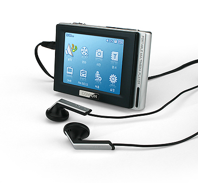

They don't make 'em like that any more: a paean to the Cowon D2 DAB

The Cowon D2 DAB is the best portable audio player you've never heard of. At least, you've probably never heard of it if you live outside Cowon's home country of South Korea. I bought my first one on its release in 2005, and I've had several since then -- nothing lasts forever. If I wanted to buy one now, I would have to go to an online auction site and pay more than I did in 2005 -- a rare distinction in the consumer electronics marketplace.
The D2 was my constant companion until, like everybody else, I found myself permanently welded to my smartphone. Like (I guess) everybody else, I reasoned that I might as well play audio on my phone, since I've got it with me all the time anyway. But, as an audio player, the D2 blows away any phone -- then or now. It certainly blew away any other portable media player in 2005 -- or now. Here's why.
- It produces an output voltage capable of driving high-impedance headphones. I don't know any phone that can do this, even now. Back in 2005, quality headphones were all high-impedance designs; many still are. With ordinary, low-impedance headphones, the output level could be deafening. There's a secret (but well-documented) menu option you have to invoke to overcome the regulatory limitations of European countries, and unleash the full volume.
- Because there was so much output voltage headroom, you could (say) boost the bass frequencies without quietening everything else. So the graphic equalizer on the Cowon actually behaved as it did in studio equipment. Modern smartphones and media players can't do this, because they don't produce enough output voltage, or they're limited by regulatory concerns.
- Right from the start, the D2 played CD-quality, uncompressed audio files. In 2005, most people were still using the horrible (by modern standards) MP3 format. Many smartphones still struggle to play CD-quality audio files without dropouts, because they're too busy plundering your files for information they can sell to advertisers. Mid-priced consumer-grade portable players like Sony's NWE-394L still don't support FLAC, in 2023.
- The D2 had a continuous playback time of 50 hours. Its standby time was essentially unlimited. I used mine all day, every day, and I only charged it once a week. Many modern smartphones struggle to get through a single day without charging, even if you don't use them. Modern portable media players that aspire to be as good as the D2 are usually based on Android, and have exactly the same problem as smartphones.
- The D2 DAB had full support for DAB digital radio. I don't know of any smartphone that had this in 2005 or, in fact, has it now. I get 50+ DAB stations in my neighbourhood with perfect clarity. I suppose that, for a smartphone user, access to Internet radio stations makes DAB radio redundant. But it would be nice to have the option, particular when you're not in a place with Internet access. And, yes, there are such places, even in the UK.
- The D2 is tiny and weighs, well, nothing.
- The D2 was great for audiobooks. It remembered what I was listening to when I switched it off, and could set bookmarks for multiple files. It was easy to navigate within a long audio file using the touch-screen. Few smartphone apps do this properly, even now, and most portable players do not even try.
- You didn't need any specific software to copy audio files onto the D2. It was a simple file copy. So it was compatible with computers with any operating system. And, unlike many players, format conversion was rarely required -- the D2 could play anything. When the D2 was released, almost all portable media players needed proprietary software to install files. Sony's software was particularly awful. You could never really be sure what you were actually listening to, after it had gone through proprietary conversions. Apple's iPod range never got past this stage, in its entire life.
- The D2 has a tiny, captive stylus for use with the touch-screen. Unless you were really careless, you couldn't lose it or break it.
- The D2 could be dismantled and repaired. Its case is held together with ordinary (but tiny) bolts, and the inside is nicely organized. A common repair was to adjust the power switch, whose contacts eventually got grimy and saggy. Battery replacement was pretty trivial, compared with most modern smartphones.
- The D2 was virtually indestructible. Its tiny screen was recessed, so it couldn't easily suffer impacts. The rest of the case was solid metal. I've sat and trod on mine, dropped it from the roof, kicked it around, used it to hammer in a tent peg, with not even a scratch.
Of course, it wasn't perfect -- the D2 had no Bluetooth support, nor any way to do wireless file transfers. You had to plug it into a computer to copy files onto it. And its user interface was funky, to put it mildly. The touch-screen was lamentably bad, but no worse than was normal back in 2005. Most portable players didn't even have touch-screens at that time. Many non-Android ones still don't.
Outside of Korea, Cowon products were popular with people who were prepared to do a bit of research, and buy something based on its merits. Cowon never had a fashion following, as Apple does. To the extent that their products sold at all, they sold because they were actually good.
Although the D2 outperforms a phone as a music player, the reality is that I'm going to have my phone with me anyway. The D2 outperforms my phone as a music player in every important respect, but not so much so that I want to carry an extra device.
I'm quite interested in the history of technology, but I don't know whether the D2 -- and the few products like it -- were killed by the smartphone, or killed by Apple. Apple's fashion-based marketing certainly knocked the stuffing out of a lot of better products. Other innovators, like French company Archos, also suffered from the Apple onslaught. I don't know if Korean schoolkids hung around in the schoolyard, boasting about their latest Cowon -- probably not, would be my guess. My feeling is that, wherever you lived, a Cowon customer was somebody who cared about quality and functionality more than fashion.
Cowon still exists, but its market niche these days is in 'Audiophile' products -- a rather dubious category, given how good the audio playback of many phones can be. Cowon, of course, is not the only company to be forced into this tactic: the more famous one is iRiver, now known more pretentiously as Astell & Kern. But Cowon no longer makes a product like the D2 -- nobody does. And that's a shame. The smartphone has conditioned us to accept general-purpose, overpriced mediocrity.
Postscript: A few Chinese companies -- notably Ruizu -- seem to have recognized that there is a market for small, affordable portable players that aren't based on a cut-down mainframe operating system. One or other of these companies might produce the next generation Cowon D2. Unfortunately, these vendors seems to be aiming for the lowest possible cost, which suggests that they won't achieve the ruggedness and reliability of the D2. And their user interfaces seem to be even more funky than the D2's, which set the unusability bar pretty high to start with. Still, I live in hope.